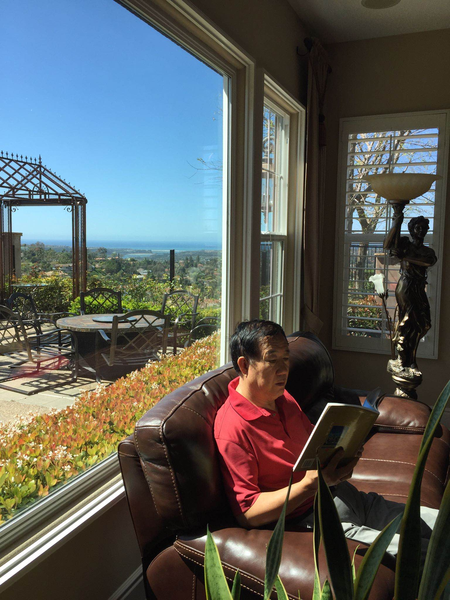

North America Chinese Writers Association Los Angeles
我的妻子喜歡喝茶，喝茶是她享受生活的方式之一。
每天上午，她起床後的第一件事，就是沏一壺熱茶，坐在窗前，開始她的消磨時光之旅。
沏上茶後，她並不急於飲用，總要先欣賞茶葉浸泡時，逐漸展開的過程和茶水顏色由淡而深的變化。看夠了才倒進茶杯
——我一口就能喝光十杯的那種迷你杯，抿一下琢磨一陣，分幾次才能喝完，看著都讓人心急。
回想當年，她並不是這樣。認識她時，她只是喜歡喝茶而已。那時，大家喝的是單位發的茉莉花茶，用的是搪瓷茶缸，沒有什麼挑選的餘地。
不知道是從什麼時候開始，妻子對喝茶有了要求：只選綠茶、普洱，不再喝花茶；只喝新茶、最好是明前茶，不再喝陳茶。喝茶的方法也發生了變化。記得有一次，她把剛泡的茶倒進茶杯後，卻不喝，而是又倒回茶壺里說：「頭一遍是水，第二遍是茶，第三第四是精華」。喝上一陣子，只要茶水變淡了，她就會添茶葉或重沏一壺還說：「茶淡不如水，人窮不如鬼」。如果上午外出辦事，沒顧上喝綠茶，下午或晚上還要補喝普洱茶，說普洱茶不影響睡眠。
——那時候的她對喝茶也就這點講究。
自從有了微信，有了朋友圈，她的規矩就多了。收到一些有關喝茶的養生知識，她就做為最高指示，毫不打折的照辦。
看到「喝綠茶可以提高免疫力，防止癌症」的提示，她就把綠茶當成萬能的神丹妙藥，開始專喝綠茶；
看到「茶葉里會有殘留農藥」的告戒，她就把用開水衝一次茶葉的程序，改成涮三遍。
她品茗時，會面對窗外的風景，自我欣賞。而不嗜飲茶的我，有時會在一旁的沙發上看書
看到有關喝什麼茶，用多高溫度的水的指導，她就一絲不苟地落實：水燒開後，先涼上一會兒讓水溫降低到九十度左右再衝泡。衝泡也不再讓茶葉長時間浸泡。把熱水衝進茶壺後，頂多一兩分鐘，就把放有茶葉的漏網提出來，放在專用底座上，這時，她才茶水從壺中倒入杯中，供自己或在座的朋友去品。
這些年，與喝茶有關的茶具不斷推陳出新。她一髮現有新奇的就買，隔上些日子就換著用。有一年，我們去台灣，離開台北時，她在機場的商店裡，因為購買茶具還誤了登機。多花了五千多元的改簽費，使茶具的價格徒然增加了幾十倍。
在追求茶具檔次的同時，她對喝茶的氛圍也有了要求，開始在家裡營造賞心悅目的喝茶環境。還好，她平日喝茶的桌子就擺在靠窗戶的地方，方便遙望海景和蘭天，不用再移動。能體現室內「雅」的琴、棋、書、畫，家裡都有。雖然琴是鋼琴，畫是油畫，也能將就湊數。
喝茶的環境滿意後，她又把目光轉到了我的身上，要幫我提升生活品質和層次。我口喝時，白水、飲料都能解渴，熱的冷的都能下肚。與朋友們一起閒聊時，我雖不拒絕喝茶，但心思大都在聊天的內容上，對茶葉的品種、品質並不在意。有時茶葉放多變濃了，我還會嫌苦，要兌一些白水稀釋。
我不愛喝茶還因為，青少年時，糧食限量供應，喝茶有別的什麼功效我不知道，但喝茶能幫助消化，讓我餓的飢腸轆轆，我深有感受，以至於一喝茶就想吃東西。
妻子對我不懂喝茶很不以為然，她認為不會品茶，如同不會用刀叉吃西餐，是不懂禮儀，沒有品位，沒有素質的表現。
她開始引導我學品茶。首當其衝的是讓我把喝茶改稱為品茗。認為這樣說才不俗不土，顯的高雅有檔次。閒暇時，她一品茗，也給我倒一杯。我也就湊過去，不管是否口喝，都裝模作樣的去品。
只是我對人們宣揚的，品茶是一種精神享受，淺啜細品，能讓人忘卻煩擾，能靜心養性這些功效沒有什麼感覺。我認為有了煩心事，再喝好茶也該煩還煩。
而且，我覺得茶的味道都差不多，感覺不到茶中有她所說的口感醇厚與淡薄，順滑與澀口。品不出茶葉的好壞，質量的高低。
我想，堅持「品」下去，也許有一天我會嗜茶上癮，變的離不開它。